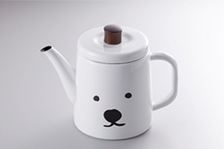
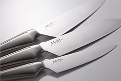
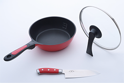

[ About Works ]
Produce products
キッチンアイテムやランチ関連商品、テーブルウェアなど、ユーザーのライフスタイルに“豊かさ”や“うるおい”をプラスする商品の開発を幅広く行っています。 単に商品を作るだけでなく、売り場への導入や、確実に購買へと繋がる販売促進活動などをセットにした商品開発を行います。



[ Products Lineup ]

Import Business
LIMONでは海外の展示会に行き、日本の暮らしを楽しくするキッチン用品を発掘しています。海外で仕入れた商品は、小売店、百貨店、専門店、ECサイト等に卸しを行い消費者へ商品を届けています。